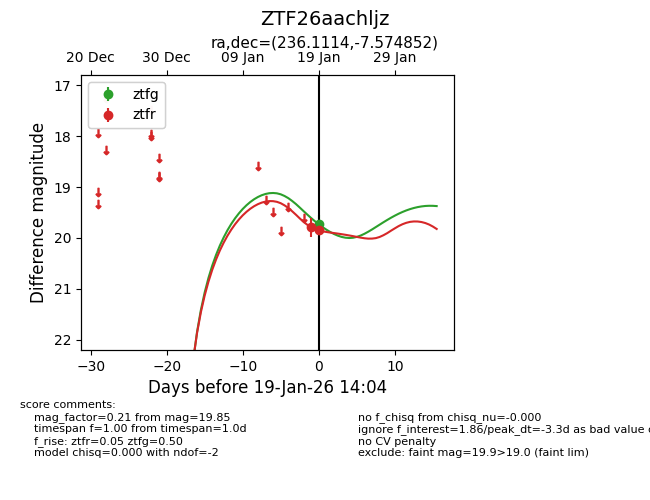
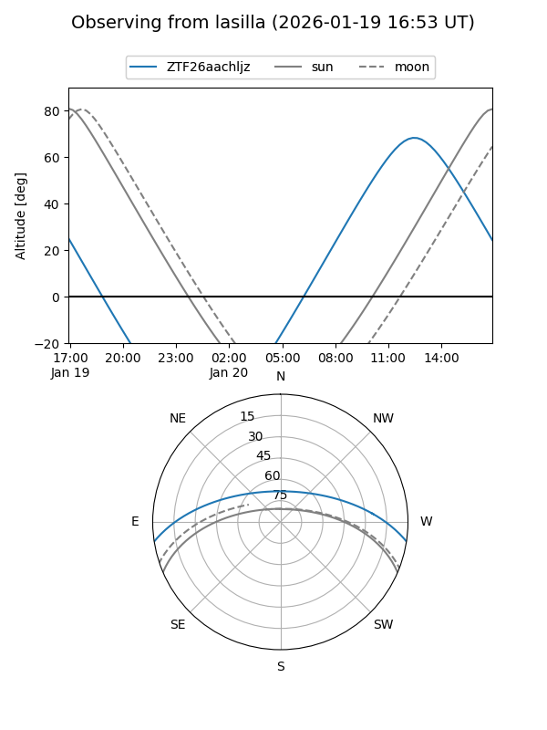
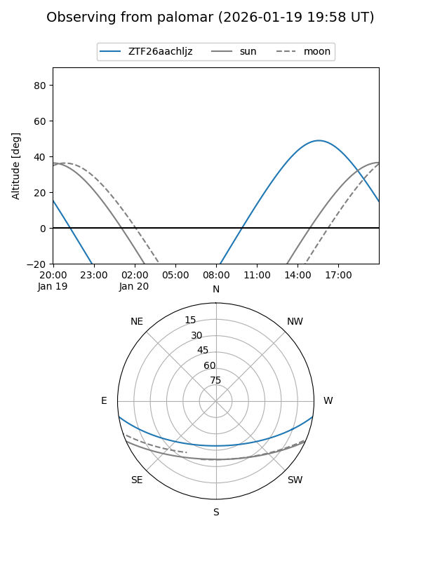

ZTF26aachljz
Target ZTF26aachljz at 2026-01-19 14:05
Aliases and brokers:
FINK: link
Lasair: link
ALeRCE: link
alt names
ZTF26aachljz (ztf,fink_ztf)
Coordinates:
equatorial (ra, dec) = 236.1114,-7.57485
equatorial (HMS+DMS) = 15:44:26.74,-07:34:29.47
galactic (l, b) = (359.6103,+35.62344)
Flags:
Photometry:
last ztfg=19.73, ztfr=19.85
1 ztfg, 2 ztfr detections
Lightcurve

Visibility


Additional plots